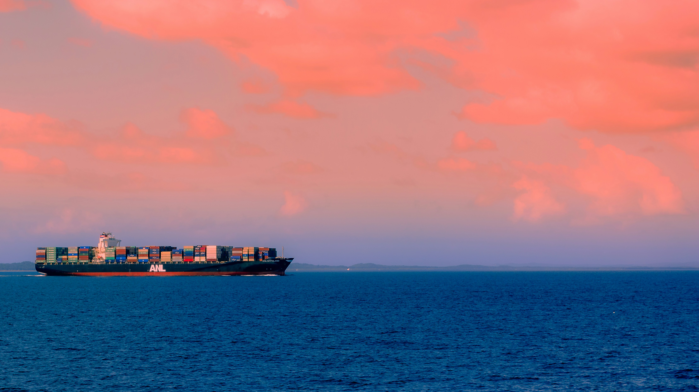

Présentation
Samarcande Capital est une société française spécialisée dans le financement et le développement de projets logistiques et immobiliers durables. Filiale du groupe ICEBERG BKG, elle structure des opérations à forte valeur ajoutée, au croisement de la décarbonation, de l’économie circulaire et de la transition énergétique.
Projet phare : Samarcande Corridor

Corridor logistique et énergétique reliant Marseille – Lyon – Paris. Intègre report modal ferroviaire, autonomie énergétique, valorisation des ressources et une architecture vivante.

Méthodologie
- Structuration de projet : montage financier, stratégie foncière, analyse territoriale
- Conception responsable : matériaux durables, architecture intégrée, sobriété énergétique
- Synergies locales : collaboration avec acteurs publics et privés
- Vision long terme : résilience logistique et énergétique
Domaines d’intervention
- Corridors logistiques multimodaux (rail / route / énergie)
- Zones d’activités industrielles bas-carbone
- Plateformes énergétiques autonomes
- Aménagements urbains à impact positif